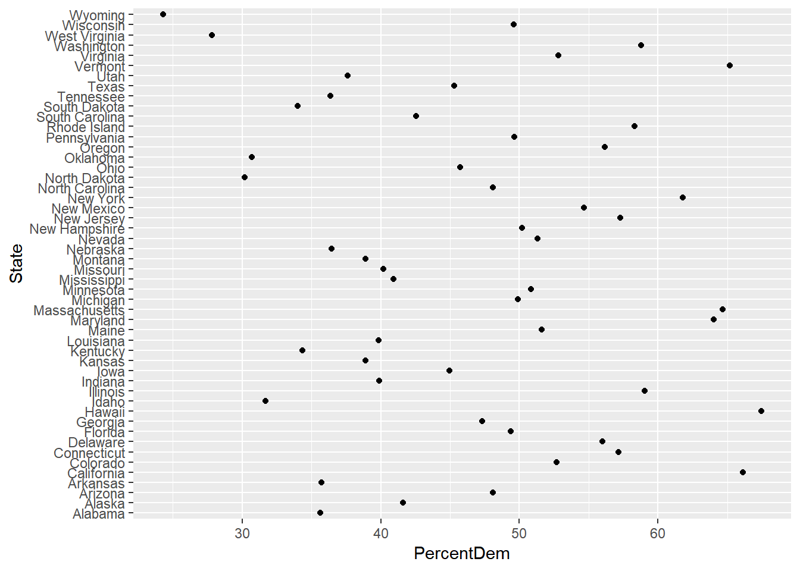
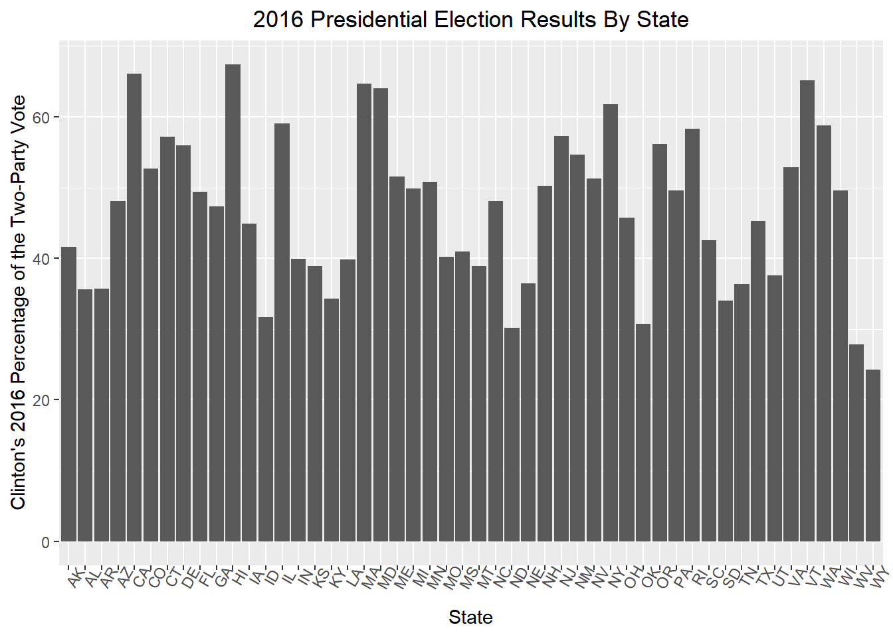
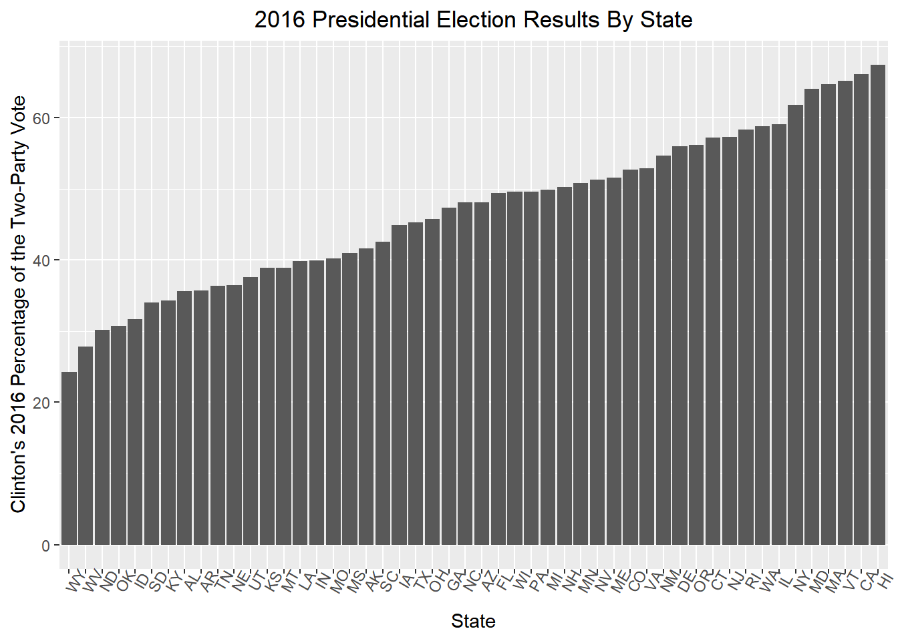
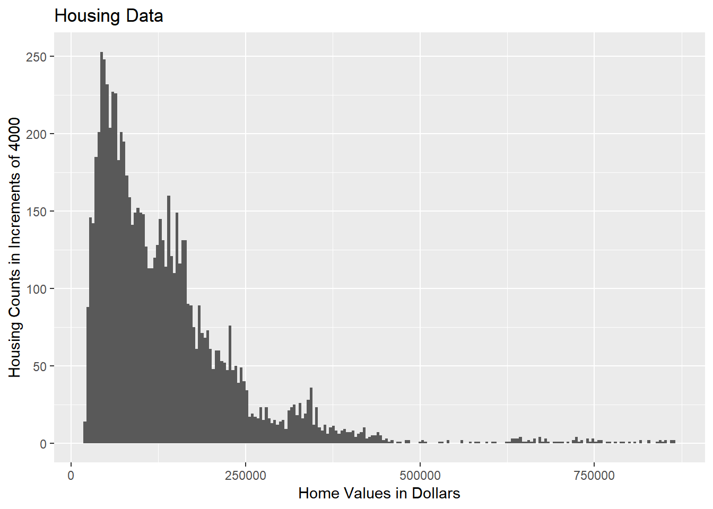
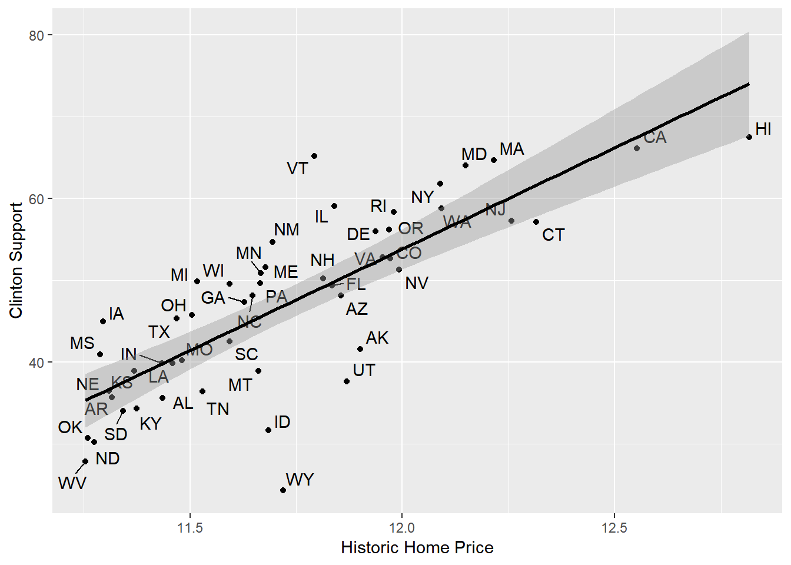
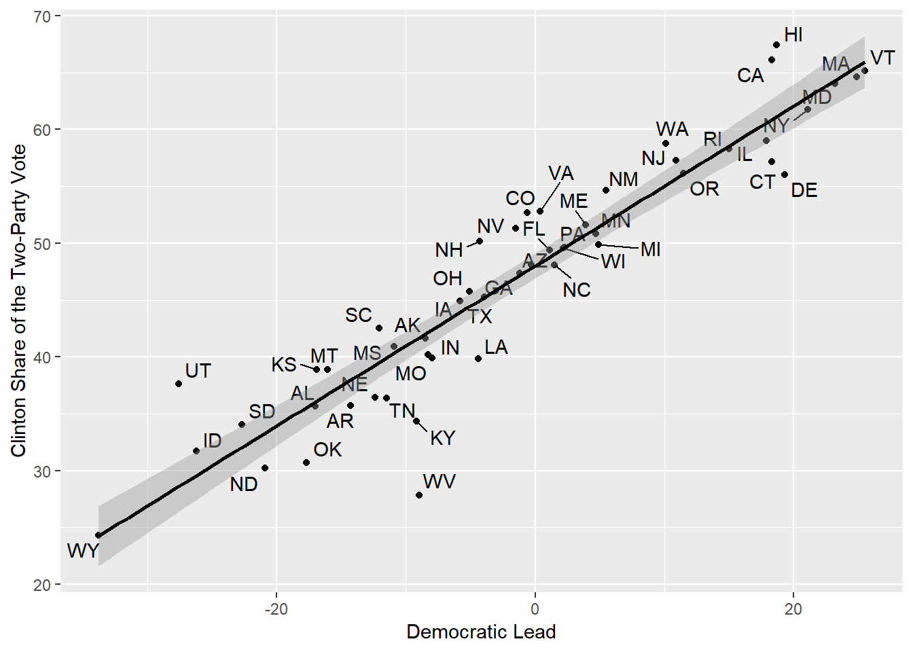
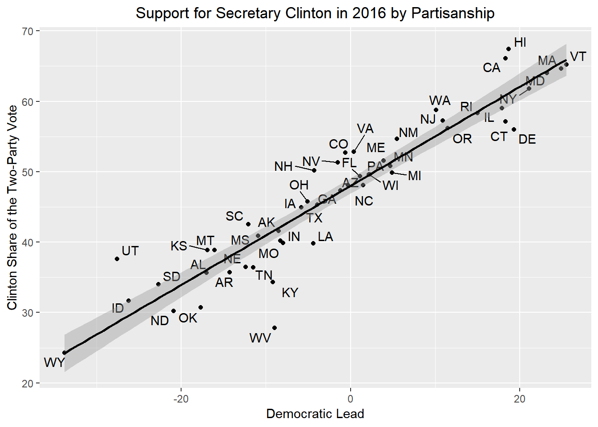

Last updated: 2018-10-15
workflowr checks: (Click a bullet for more information) ✔ R Markdown file: up-to-date
Great! Since the R Markdown file has been committed to the Git repository, you know the exact version of the code that produced these results.
✔ Environment: empty
Great job! The global environment was empty. Objects defined in the global environment can affect the analysis in your R Markdown file in unknown ways. For reproduciblity it’s best to always run the code in an empty environment.
✔ Seed:
set.seed(20181015)
The command set.seed(20181015) was run prior to running the code in the R Markdown file. Setting a seed ensures that any results that rely on randomness, e.g. subsampling or permutations, are reproducible.
✔ Session information: recorded
Great job! Recording the operating system, R version, and package versions is critical for reproducibility.
✔ Repository version: 4fbf103
wflow_publish or wflow_git_commit). workflowr only checks the R Markdown file, but you know if there are other scripts or data files that it depends on. Below is the status of the Git repository when the results were generated:
Ignored files:
Ignored: docs/figure/
| File | Version | Author | Date | Message |
|---|---|---|---|---|
| Rmd | 4fbf103 | Julian A. Acevedo Pardo | 2018-10-15 | Add ElectionProjectCD |
library(tidyverse)-- Attaching packages -------------------------------------------- tidyverse 1.2.1 --v ggplot2 3.0.0 v purrr 0.2.5
v tibble 1.4.2 v dplyr 0.7.6
v tidyr 0.8.1 v stringr 1.3.1
v readr 1.1.1 v forcats 0.3.0-- Conflicts ----------------------------------------------- tidyverse_conflicts() --
x dplyr::filter() masks stats::filter()
x dplyr::lag() masks stats::lag()library(rvest)Loading required package: xml2
Attaching package: 'rvest'The following object is masked from 'package:purrr':
pluckThe following object is masked from 'package:readr':
guess_encodinglibrary(ggrepel)
URL2 <- "https://en.wikipedia.org/wiki/United_States_presidential_election,_2016"
election <- read_html(URL2) %>% html_nodes(xpath = '//*[@id="mw-content-text"]/div/div[37]/table') %>% html_table(fill = TRUE)
pelect <- election[[1]]
names(pelect)[1]<-"State"
names(pelect)[2]<-"Junk2"
names(pelect)[3]<-"Hillary"
names(pelect)[4]<-"Junk4"
names(pelect)[5]<-"Junk5"
names(pelect)[6]<-"Donald"
names(pelect)[7]<- "Junk7"
names(pelect)[8]<- "Junk8"
names(pelect)[9]<- "Junk9"
names(pelect)[10]<-"Junk10"
names(pelect)[11]<-"Junk11"
names(pelect)[12]<-"Junk12"
names(pelect)[13]<-"Junk13"
names(pelect)[14]<-"Junk14"
names(pelect)[15]<-"Junk15"
names(pelect)[16]<-"Junk16"
names(pelect)[17]<-"Junk17"
names(pelect)[18]<-"Junk18"
names(pelect)[19]<-"Junk19"
names(pelect)[20]<-"Junk20"
names(pelect)[21]<-"Junk21"
names(pelect)[22]<-"Junk22"
names(pelect)[23]<-"Junk23"
names(pelect)[24]<-"Junk24"
names(pelect)[25]<-"Junk25"
pelect <- as.tibble(pelect) %>%
select(State, Hillary, Donald) %>%
slice(-c(1,10,22,23,32,33,34,58)) %>%
mutate(Clinton=parse_number(Hillary, na=character()),
Trump=parse_number(Donald, na=character()),
PercentDem=((Clinton/(Clinton+Trump))*100),
State=replace(State, State=="Maine (at-lg)", "Maine"),
State=replace(State, State=="Nebraska (at-lg)", "Nebraska")) %>%
select(State,PercentDem)
###Visualizing Election Data
qplot(PercentDem,State,data=pelect)
pelect <- mutate(pelect, State2=state.abb)
g1 <- ggplot(pelect, aes(x=State2, y=PercentDem)) +
geom_bar(stat="identity")
g2 <- g1 +
ylab("Clinton's 2016 Percentage of the Two-Party Vote") +
xlab("State")+
ggtitle("2016 Presidential Election Results By State")+
theme(plot.title = element_text(hjust = 0.5)) +
theme(axis.text.x = element_text(angle=60))
g2
g3 <- ggplot(pelect, aes(x=reorder(State2,PercentDem), y=PercentDem)) +
geom_bar(stat="identity")
g4 <- g3 +
ylab("Clinton's 2016 Percentage of the Two-Party Vote") +
xlab("State")+
ggtitle("2016 Presidential Election Results By State")+
theme(plot.title = element_text(hjust = 0.5)) +
theme(axis.text.x = element_text(angle=60))
g4
housing <- read_csv("https://raw.githubusercontent.com/IQSS/workshops/master/R/Rgraphics/dataSets/landdata-states.csv")Parsed with column specification:
cols(
State = col_character(),
region = col_character(),
Date = col_double(),
Home.Value = col_integer(),
Structure.Cost = col_integer(),
Land.Value = col_integer(),
Land.Share..Pct. = col_double(),
Home.Price.Index = col_double(),
Land.Price.Index = col_double(),
Year = col_integer(),
Qrtr = col_integer()
)g5 <- ggplot(housing, aes(x = Home.Value)) +
geom_histogram(stat = "bin", binwidth=4000) +
ylab("Housing Counts in Increments of 4000") +
xlab("Home Values in Dollars")
g5 + ggtitle("Housing Data")
HousingMeans <- aggregate(housing["Home.Value"], housing["State"], FUN=mean) %>%
slice(-8) %>%
mutate(State2=State) %>%
select(State2, Home.Value)
ElectionData <- as.tibble(inner_join(HousingMeans,pelect))Joining, by = "State2"ElectionPlot <-ggplot(data=ElectionData, aes(x = log (Home.Value), y = PercentDem)) +
geom_point(color='black') +
geom_text_repel(aes(label=State2))+
geom_smooth(method = "lm", se=TRUE, color='black')+
xlab("Historic Home Price")+
ylab("Clinton Support")
ElectionPlot
fit1 <- lm(PercentDem ~ Home.Value, data=ElectionData)
summary(fit1)
Call:
lm(formula = PercentDem ~ Home.Value, data = ElectionData)
Residuals:
Min 1Q Median 3Q Max
-21.3659 -5.1916 0.7538 5.4576 18.1371
Coefficients:
Estimate Std. Error t value Pr(>|t|)
(Intercept) 2.769e+01 2.782e+00 9.955 2.94e-13 ***
Home.Value 1.462e-04 1.944e-05 7.521 1.17e-09 ***
---
Signif. codes: 0 '***' 0.001 '**' 0.01 '*' 0.05 '.' 0.1 ' ' 1
Residual standard error: 7.496 on 48 degrees of freedom
Multiple R-squared: 0.541, Adjusted R-squared: 0.5314
F-statistic: 56.57 on 1 and 48 DF, p-value: 1.174e-09fit2 <- lm(PercentDem ~ log(Home.Value), data=ElectionData)
summary(fit2)
Call:
lm(formula = PercentDem ~ log(Home.Value), data = ElectionData)
Residuals:
Min 1Q Median 3Q Max
-22.5442 -3.8393 -0.0638 4.7066 16.5042
Coefficients:
Estimate Std. Error t value Pr(>|t|)
(Intercept) -243.37 32.62 -7.462 1.45e-09 ***
log(Home.Value) 24.76 2.78 8.908 9.70e-12 ***
---
Signif. codes: 0 '***' 0.001 '**' 0.01 '*' 0.05 '.' 0.1 ' ' 1
Residual standard error: 6.793 on 48 degrees of freedom
Multiple R-squared: 0.6231, Adjusted R-squared: 0.6152
F-statistic: 79.35 on 1 and 48 DF, p-value: 9.696e-12mean(ElectionData$Home.Value)[1] 132267.8median(ElectionData$Home.Value)[1] 117309.4ElectionData<-ElectionData %>% mutate(South=case_when(State2=="AL" |
State2=="AR" |
State2=="MS" |
State2=="GA" |
State2=="FL" |
State2=="SC" |
State2=="NC" |
State2=="TN" |
State2=="TX" |
State2=="VA" |
State2=="WV" |
State2=="OK" |
State2=="LA" |
State2=="KY" ~ 1),
South=replace_na(South,0))
ElectionData %>%
group_by(South) %>%
summarise(PercentDem = mean(PercentDem))# A tibble: 2 x 2
South PercentDem
<dbl> <dbl>
1 0 49.6
2 1 40.5fit1 <- lm(PercentDem ~ log(Home.Value) + South, data=ElectionData)
summary(fit1)
Call:
lm(formula = PercentDem ~ log(Home.Value) + South, data = ElectionData)
Residuals:
Min 1Q Median 3Q Max
-23.0151 -3.2041 0.1761 4.7770 16.0981
Coefficients:
Estimate Std. Error t value Pr(>|t|)
(Intercept) -232.691 36.115 -6.443 5.73e-08 ***
log(Home.Value) 23.893 3.055 7.820 4.74e-10 ***
South -1.658 2.352 -0.705 0.484
---
Signif. codes: 0 '***' 0.001 '**' 0.01 '*' 0.05 '.' 0.1 ' ' 1
Residual standard error: 6.829 on 47 degrees of freedom
Multiple R-squared: 0.627, Adjusted R-squared: 0.6112
F-statistic: 39.51 on 2 and 47 DF, p-value: 8.599e-11##################
#Now we are scraping the web for partisanship data, and cleaning it up. .
##################
read_html("http://news.gallup.com/poll/203117/gop-maintains-edge-state-party-affiliation-2016.aspx") %>%
html_node(xpath='//*[@id="20170126154846"]/table') %>%
html_table(fill = TRUE) %>% as_tibble() -> partyid
partyid <- slice(partyid, 3:52) %>%
rename(State=X1,DemLead=X4) %>%
select(State,DemLead) %>%
mutate(DemLead=as.numeric(DemLead))
ElectionData <-inner_join(ElectionData,partyid)Joining, by = "State"ElectionPlot2 <-ggplot(data=ElectionData, aes(x = DemLead, y = PercentDem)) +
geom_point(color='black') +
geom_text_repel(aes(label=State2))+
geom_smooth(method = "lm", se=TRUE, color='black')+
xlab("Democratic Lead")+
ylab("Clinton Share of the Two-Party Vote")
ElectionPlot2
ElectionPlot2 + ggtitle("Support for Secretary Clinton in 2016 by Partisanship") +
theme(plot.title = element_text(hjust = 0.5))
fit2 <- lm(PercentDem ~ log(Home.Value) + South + DemLead, data=ElectionData)
summary(fit2)
Call:
lm(formula = PercentDem ~ log(Home.Value) + South + DemLead,
data = ElectionData)
Residuals:
Min 1Q Median 3Q Max
-9.9138 -1.4915 0.4257 2.0688 4.1425
Coefficients:
Estimate Std. Error t value Pr(>|t|)
(Intercept) -46.88984 20.46160 -2.292 0.0266 *
log(Home.Value) 8.11396 1.73380 4.680 2.55e-05 ***
South -1.64154 1.02437 -1.602 0.1159
DemLead 0.55862 0.03934 14.202 < 2e-16 ***
---
Signif. codes: 0 '***' 0.001 '**' 0.01 '*' 0.05 '.' 0.1 ' ' 1
Residual standard error: 2.975 on 46 degrees of freedom
Multiple R-squared: 0.9307, Adjusted R-squared: 0.9262
F-statistic: 206 on 3 and 46 DF, p-value: < 2.2e-16ElectionData %>% top_n(10, Home.Value) %>% arrange(desc(Home.Value))# A tibble: 10 x 6
State2 Home.Value State PercentDem South DemLead
<chr> <dbl> <chr> <dbl> <dbl> <dbl>
1 HI 368217. Hawaii 67.4 0 18.7
2 CA 282808. California 66.1 0 18.3
3 CT 223063. Connecticut 57.1 0 18.3
4 NJ 210540. New Jersey 57.3 0 10.9
5 MA 202006. Massachusetts 64.7 0 24.9
6 MD 188835. Maryland 64.0 0 23.2
7 WA 178523. Washington 58.8 0 10.1
8 NY 178007. New York 61.8 0 21.1
9 NV 161603. Nevada 51.3 0 -1.5
10 RI 159440 Rhode Island 58.3 0 15 ElectionData %>% select(contains("State"))# A tibble: 50 x 2
State2 State
<chr> <chr>
1 AK Alaska
2 AL Alabama
3 AR Arkansas
4 AZ Arizona
5 CA California
6 CO Colorado
7 CT Connecticut
8 DE Delaware
9 FL Florida
10 GA Georgia
# ... with 40 more rowsElectionData %>% select("State", everything())# A tibble: 50 x 6
State State2 Home.Value PercentDem South DemLead
<chr> <chr> <dbl> <dbl> <dbl> <dbl>
1 Alaska AK 147385. 41.6 0 -8.5
2 Alabama AL 92545. 35.6 1 -17
3 Arkansas AR 82077. 35.7 1 -14.3
4 Arizona AZ 140756. 48.1 0 -0.3
5 California CA 282808. 66.1 0 18.3
6 Colorado CO 158176. 52.7 0 -0.6
7 Connecticut CT 223063. 57.1 0 18.3
8 Delaware DE 152906. 56.0 0 19.3
9 Florida FL 137843. 49.4 1 1.1
10 Georgia GA 112197. 47.3 1 -1.2
# ... with 40 more rowsElectionData %>% rename_all(tolower)# A tibble: 50 x 6
state2 home.value state percentdem south demlead
<chr> <dbl> <chr> <dbl> <dbl> <dbl>
1 AK 147385. Alaska 41.6 0 -8.5
2 AL 92545. Alabama 35.6 1 -17
3 AR 82077. Arkansas 35.7 1 -14.3
4 AZ 140756. Arizona 48.1 0 -0.3
5 CA 282808. California 66.1 0 18.3
6 CO 158176. Colorado 52.7 0 -0.6
7 CT 223063. Connecticut 57.1 0 18.3
8 DE 152906. Delaware 56.0 0 19.3
9 FL 137843. Florida 49.4 1 1.1
10 GA 112197. Georgia 47.3 1 -1.2
# ... with 40 more rowssessionInfo()R version 3.5.1 (2018-07-02)
Platform: x86_64-w64-mingw32/x64 (64-bit)
Running under: Windows 10 x64 (build 17134)
Matrix products: default
locale:
[1] LC_COLLATE=English_United States.1252
[2] LC_CTYPE=English_United States.1252
[3] LC_MONETARY=English_United States.1252
[4] LC_NUMERIC=C
[5] LC_TIME=English_United States.1252
attached base packages:
[1] stats graphics grDevices utils datasets methods base
other attached packages:
[1] bindrcpp_0.2.2 ggrepel_0.8.0 rvest_0.3.2 xml2_1.2.0
[5] forcats_0.3.0 stringr_1.3.1 dplyr_0.7.6 purrr_0.2.5
[9] readr_1.1.1 tidyr_0.8.1 tibble_1.4.2 ggplot2_3.0.0
[13] tidyverse_1.2.1
loaded via a namespace (and not attached):
[1] tidyselect_0.2.4 haven_1.1.2 lattice_0.20-35
[4] colorspace_1.3-2 htmltools_0.3.6 yaml_2.2.0
[7] utf8_1.1.4 rlang_0.2.2 R.oo_1.22.0
[10] pillar_1.3.0 glue_1.3.0 withr_2.1.2
[13] R.utils_2.7.0 selectr_0.4-1 modelr_0.1.2
[16] readxl_1.1.0 bindr_0.1.1 plyr_1.8.4
[19] munsell_0.5.0 gtable_0.2.0 workflowr_1.1.1
[22] cellranger_1.1.0 R.methodsS3_1.7.1 evaluate_0.11
[25] labeling_0.3 knitr_1.20 curl_3.2
[28] fansi_0.3.0 broom_0.5.0 Rcpp_0.12.18
[31] scales_1.0.0 backports_1.1.2 jsonlite_1.5
[34] hms_0.4.2 digest_0.6.15 stringi_1.1.7
[37] grid_3.5.1 rprojroot_1.3-2 cli_1.0.0
[40] tools_3.5.1 magrittr_1.5 lazyeval_0.2.1
[43] crayon_1.3.4 whisker_0.3-2 pkgconfig_2.0.2
[46] lubridate_1.7.4 assertthat_0.2.0 rmarkdown_1.10
[49] httr_1.3.1 rstudioapi_0.7 R6_2.2.2
[52] nlme_3.1-137 git2r_0.23.0 compiler_3.5.1 This reproducible R Markdown analysis was created with workflowr 1.1.1